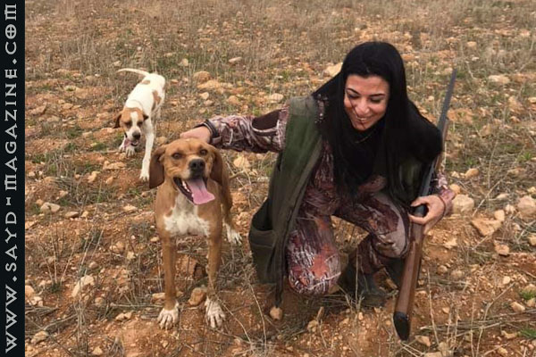
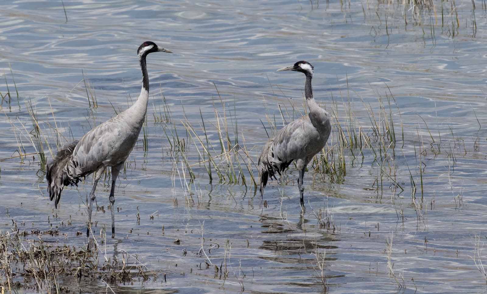

الأرشيف — كل المقالات (704)

20 آب 2022 · صيد بري
أشهر صيّادة في سوريا تحتضن الطبيعة بعشق أُم، وترمي بحنكة صقر طريدتها دون تردد، إنه التوازن بين الروح والجسد، بين المهارة والمعرفة، أنه الانسجام والتكامل بين الطبيعة والإنسان المسؤ…
11 نيسان 2022 · صيد بري
الصيد شغف وهواية نبيلة لها أصول وقواعد تحترم الطبيعة والحيوان وهو تراث تحكمه الأعراف والمبادئ، عرفه الإنسان منذ القِدم ومارسه أجدادنا كمصدر للغذاء ومن أجل التحكم بأعداد الحيوانات…
2 آب 2021 · أخبار
احتفل "مركز الشرق الأوسط للصيد المستدام- MESHC" بعد ظهر الأحد 1 آب 2021 بإختتام مسابقة "جائزة أسعد عادل سرحال لتصوير الحياة البرية AASWPP"، التي كان قد أطلقها بالتعاون مع شركائه ا…
22 تموز 2021 · سياحة بيئية
رجل يختصر بإرادته الصلبة وشغفه في الاكتشاف صعودًا بيتًا من قصيدة "إرادة الحياة" للشاعر التونسي الكبير أبو القاسم الشابّي: "من لا يحب صعود الجبال، يعش أبد الدهر بين الحفر" الفنان ا…
21 تموز 2021 · سياحة بيئية
تعليمات من المجتمع الجبلي اللبناني بخصوص حوادث التنزه بالقرب من الأنهار والشلالات والإجراءات الوقائية ذات الصلة. على الرغم من أن المشي في الطبيعة هو من احد التجارب الممتعة، إلا أن…
22 نيسان 2021 · شعر وفن
في رحلات الصيد، يَعرف الصيادون الحيوانات والطيور من أشكالها، أحجامها وألوانها حين تكون تحت مرمى نظرهم، وهذا الأمر أسهل بكثير من معرفة الطير أو الحيوان من صوته، لأن الأمر يحتاج إلى…
16 آذار 2021 · سياحة بيئية
حين تذكر كلمة مغامرة لا يمكن ان تمرّ مرور الكرام امام اسم الصياد المصوّر المغامر اللبناني ايدي معلوف، بل عليك أن تتوقف لتتذوق طعم الوقت والطبيعة في قصصه وصوره وأحلامه التي تتسلق د…
15 آذار 2021 · أخبار
أطلق مركز الشرق الأوسط للصيد المستدام MESHC مشروعا لحماية الطبيعة من الصيد في فصل الربيع – فصل التكاثر من خلال " جائزة أسعد عادل سرحال للتصوير البرّي" وهي جائزة مخصصة للصيادين، يص…
13 آذار 2021 · كلمتنا
تناقلت الأمس عدة وسائل تواصل اجتماعي اخبارية خبراً عنوانه "مفترسة ودموية"... حيوانات مرعبة تطهر في بلدة لبنانية... وارفقت الخبر بصور لأحد حيوانات "الشيب" الذي تمكن احد المواطنين م…
17 شباط 2021 · أخبار
استكمالا للتعاون السابق بين وحدة مكافحة الصيد الجائر APU (التابعة لمركز الشرق الأوسط للصيد المستدام MESHC وجمعية حماية الطبيعة في لبنان SPNL) وبين المديرية العامة لقوى الأمن الداخ…
10 شباط 2021 · أخبار
زار مسؤولون من وحدة مكافحة الصيد الجائر APU التابعة لمركز الشرق الأوسط للصيد المستدام MESHC وجمعية حماية الطبيعة في لبنانSPNL الأربعاء 10 شباط، رئيس فرع مخابرات الجيش اللبناني في…
26 كانون الثاني 2021 · شعر وفن
الشعر ..ليس نحت كلام او مجرد رصف أحاسيس جميلة .. انه فكر نابع من القلب والعقل معا .. وهو موقف ورأي ورؤية ..وفي هذه الكلمات التي تحمل موقفا واضحا للشاعر المبدع مارون ابو شقرا من ال…
25 كانون الثاني 2021 · أخبار
شاركت وحدة مكافحة الصيد الجائرAPU التابعة لجمعية حماية الطبيعة في لبنان SPNL ومركزالشرق الأوسط للصيد المستدام MESHC عبر رئيس المركز والمسؤول الميداني لملف الصيد المسؤول في الجمعية…
24 كانون الأول 2020 · أخبار
رغم ظروف الطقس البارد والضباب اجتمع صيادون من منطقة إغبة بدعوة من وحدة مكافحة الصيد الجائر APU التابعة لمركز الشرق الأوسط للصيد المستدام MESHC وجمعية حماية الطبيعة في لبنان SPNL ا…
17 كانون الأول 2020 · أخبار
استكمالا لجهودهما في تنظيم الصيد والحد من القتل العشوائي للطيور وتعزيزالتعاون مع كل المعنيين، اقامت جمعية حماية الطبيعة في لبنانSPNL ومركز الشرق الأوسط للصيد المستدام MESHC، من ضم…
15 كانون الأول 2020 · أخبار
بعد شكاوى عديدة من قبل صيادين مستدامين ومواطنين وبيئيين، موثقة بالصور والاسماء عن مخالفات في قانون الصيد البري يقوم بها بعض صيادي البط في محيط بحيرة القرعون، قامت مصلحة الليطاني ب…
14 تشرين الثاني 2020 · أخبار
قام رئيس مركز الشرق الأوسط للصيد المستدام MESHC- مدير ملف الصيد المسؤول في جمعية حماية الطبيعة في لبنانSPNL رئيس تحرير مجلة صيد ادونيس الخطيب تراففه رئيسة وحدة الصيد الجائر APU شي…
12 تشرين الثاني 2020 · أخبار
أصدرت شيرين بو رفّول رئيسة وحدة مكافحة الصيد الجائر APU التابعة لمركز الشرق الأوسط للصيد المستدام MESHC وجمعية حماية الطبيعة في لبنان SPNL بيانا حول مخالفات الصيد على الشجر المضاء…
1 تشرين الثاني 2020 · صيد بري
عدد مخالفات ( قوّاص) الليل على الشجر المضاء بأنوار كاشفة: المخالفات القانونية : 1- يخالف المادة الأولى لجهة ممارسة الصيد في الليل. 2- يخالف المادة السابعة لجهة التجاوز الكبير للعد…
28 تشرين الأول 2020 · أخبار
بعد إصداره لقرار يمنع الصيد في منطقة بشرّي منعا باتا والتحذير من غرامات كبيرة للمخالفين ، تواصلت مجلة " صيد" مع رئيس البلدية الاستاذ فريدي كيروز للوقوف على حيثيات القرار - الذي يح…
25 تشرين الأول 2020 · أخبار
قام رئيس جمعية المتن الأعلى للبيئة والتنمية المستدامة MESDرفيق مكارم السبت 24تشرين اول 2020 بالاتصال بجمعية حماية الطبيعة في لبنان SPNL للمساعدة في إنقاذ طائر كركي مصاب بجانحه بطل…
25 تشرين الأول 2020 · أخبار
بعد اتصال من جمعية Beta - المتخصصة بمساعدة الكلاب والقطط- بمدير عام جمعية حماية الطبيعة في لبنان SPNL اسعد سرحال السبت 14 تشرين اول 2020 للمساعدة في انقاذ طائر بجع مصاب في عهدتها،…

24 تشرين الأول 2020 · أخبار
في محيط بحيرة الحولة في فلسطين المحتلة يقوم الإسرائيليين بإطعام طيور الكرك أطنانًا من الذرة بواسطة الجرارات الزراعية. ثم يستقطبون السياح من جميع أنحاء العالم لمشاهدة هذه الطيور ال…